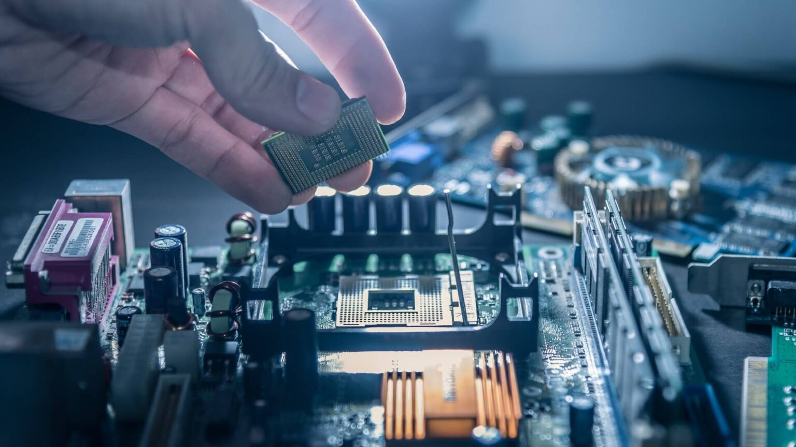

A placa mãe pode ser considerada o Painel de Controle que organiza todos os componentes do cumpoutador. Sua peça dispõe de todos os caminhos e redes que permitem a troca de informação entre todas as outras: processadores, memórias, sistemas de armazenamento, placa de rede e tudo o mais.
Também é a placa mãe que alimenta todos esses componentes internos e mais os periféricos (como mouse, webcam e teclado) com a energia que sai da tomada e entra na CPU por meio da fonte.
Tomando cuidade pois muitos fabricantes “maquiam” o computador com processadores e memórias de alto nível e uma placa mãe mais fraca, já que suas especificações, em geral, não constam nas informações do produto.
É importante ficar atento a isso na hora de comprar ou até mesmo montar um computador: usuários básicos podem abrir mão de algumas tecnologias, mas se você busca um PC gamer que possa rodar e produzir conteúdos audiovisuais com alta qualidade, uma boa placa mãe é fundamental. É importante saber qual é o seu soquete, a quantas memórias ela dá suporte, se ela sustenta hardwares mais exigentes e, é claro, se ela aguenta bem os processos mais pesados.
É importante saber que o soquete de uma placa mãe não se encaixa em qualquer processador, por isso é necessário garantir que haja compatibilidade entre as peças. Isso se dá porque cada tipo de processador possui suas próprias características, que consistem em diferentes capacidades de processamento, tecnologia de fabricação, consumo de energia entre outros. Uma placa mãe é desenvolvida para aceitar determinados modelos de processadores, e, portanto, os que usam soquetes diferentes não são compatíveis.
O cabo da fonte de energia do computador se conecta à placa mãe, e a partir de então, ela distribui essa energia para alimentar o processador e os outros dispositivos encaixados nos slots. Além da distribuição de energia, ela transmite a todos os componentes cada informação gerada durante os processos do computador. Saiba que a cada clique que você dá uma informação está sendo difundida pela placa mãe a todos os dispositivos que participam dessa ação. Ela funciona, portanto, por meio de redes e caminhos que alimentem as outras peças tanto com energia quanto com comandos. Para entender seu funcionamento, podemos imaginar um corpo humano. Nosso sistema nervoso é todo mapeado por neurônios, que enviam os estímulos ao nosso cérebro para que ele os leia. Os caminhos da placa mãe são como esses neurônios, que precisam existir para que tudo o que for importante chegue da maneira correta ao nosso cérebro (que, neste caso, seria o processador) e aos outros órgãos que precisam participar de cada atividade.
